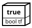
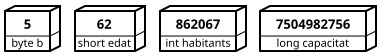
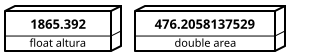
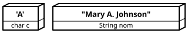

Tipus de dades
Tipus de dades en Java
En un programa es poden utilitzar diferents tipus de dades:
- Valors simples (primitive data):
- Booleans: només poden representar dos valors (si/no, vertader/fals...).
- Números: enters o decimals (la part decimal se separa amb un punt).
- Caràcters: lletres, dígits i altres símbols.
- Valors compostos: cadenes de caràcters, dates, llistes i objectes (es veuran més endavant).
Literals
Els literals representen un valor que ja es coneix en el moment d'escriure el programa.
No es guarden en memòria sinò que formen part del codi del programa.
- Literals booleans: true o false.
- Literals numèrics: 2768, 12.59 o 3.45e3 (notació científica equivalent a 3,45 x 103 = 3450.0).
- Literals de caràcter: 'H', '7' o '@' (s'han de posar entre cometes simples).
En el següent exemple, el número 10 i el missatge "La nota no pot ser superior a 10", són literals:
if (nota > 10) System.out.println("La nota no pot ser superior a 10");
Constants i variables
Les constants i les variables permeten guardar un valor en la memòria de l'ordinador.
La diferència és que el valor que es guarda en una constant no es pot modificar.
Els tipus que es poden utilitzar en Java són els següents:
- boolean: true o false (ocupa un byte encara que només utilitza un bit).

- byte: des de -128 fins a 127 (ocupa un byte).
- short: des de -32768 fins a 32767 (ocupa 2 bytes).
- int: des de -2147483648 fins a 2147483647 (ocupa 4 bytes).
- long: des de -263 fins a 263 - 1 (ocupa 8 bytes).
Es pot indicar que un literal és d'aquest tipus afegint una L al final: 45876L

- float: números reals amb 6 o 7 decimals (ocupa 8 bytes).
Es pot indicar que un literal és d'aquest tipus afegint una F al final: 45876F
- double: números reals amb 15 decimals (ocupa 16 bytes).
Es pot indicar que un literal és d'aquest tipus afegint una D al final: 45876D

- char: en Java, ocupa 2 bytes. És similar a short. Només pot contenir un caràcter.
- String: és una classe d'objectes. Serveix per guardar text (conjunt de caràcters).
